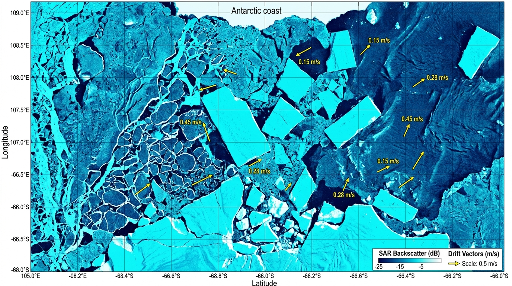
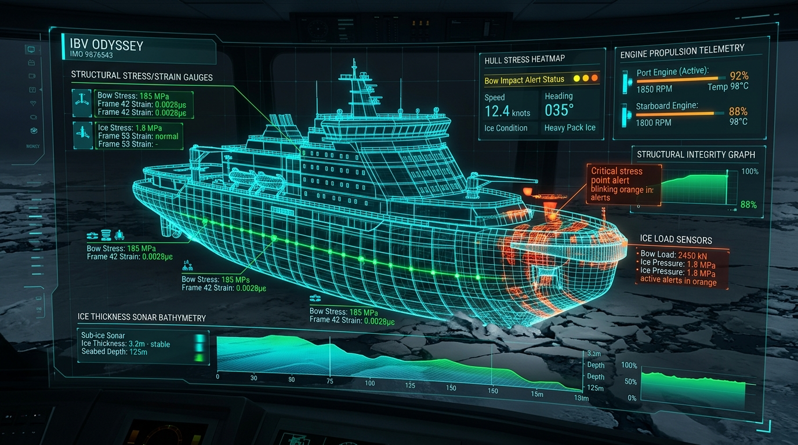

| WP # | Waypoint Label | Latitude | Longitude | Sea-Ice % | Thickness | Target Speed | Ice Resistance | Leg Dist |
|---|
M·(dV⃗ᵢ/dt) = - M·f·(k̂ × V⃗ᵢ) + F⃗ₐᵢᵣ + F⃗𝓌ₐₜₑᵣ + F⃗𝓌ₐᵥₑ + F⃗ₛₗₒₚₑ
Coriolis force + Atmospheric skin/form drag + Ocean Ekman drag + Wave radiation

High-resolution dual-polarization (HH+HV) SAR image ingested over the Weddell Sea drift corridor. Yellow vectors denote AI-derived optical flow iceberg drift velocities (0.15 m/s to 0.45 m/s). False-color brightness reflects surface radar backscatter (dB) delineating thick multi-year ice floes vs open water fracture leads.

Trained on 40+ years of satellite passive microwave (AMSR2/SSMIS) and ERA5 climate reanalysis. Forecasts pan-Antarctic sea-ice concentration probability maps at 6.25km spatial resolution up to 6 months in advance, surpassing SEAS5 dynamical models in extreme melt/freeze regimes.
Couples YOLOv8-OBB satellite SAR iceberg segmentation with hydrodynamic momentum equations. Embeds Coriolis forces, wind drag, ocean currents, and buoyancy conservation directly into the neural loss function, preventing unphysical drift predictions.
Calculates Lindqvist/Riska icebreaking resistance across spatiotemporal ice forecast grids. Balances IMO Polar Code safety indices (POLARIS Risk Index Outcome RIO) against fuel consumption and IMO CII carbon emissions to discover Pareto-optimal navigation waypoints.
Real-time edge assimilation of vessel hull strain gauges, bow accelerometers, engine fuel flow, and multibeam forward-looking sonar to validate and dynamically recalibrate the AI path every 30 minutes.
Mean Absolute Error (MAE) evaluated on Pan-Antarctic Sea Ice Concentration across lead times. IceNet achieves a 42% reduction in prediction error at T+7 days compared to traditional ECMWF numerical physics models.
| Sensor / Constellation | Agency | Resolution | Latency | Status |
|---|
ANTARCTIC RESEARCH STATIONS & LOGISTICS CORRIDORS
Real-time ice conditions, katabatic weather warnings, resupply windows, and icebreaker berth availability.